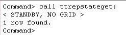
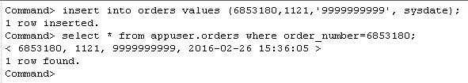
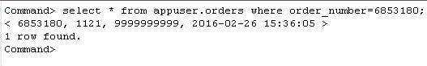

After setting up an active master database, you can create the standby database by cloning the active database to the standby server. In order to duplicate the active database, the instance administrator on the standby machine must be identical to the one on the active server.
This tutorial uses the DSNs repdb1_1211 and repdb2_1211 to create an Active Standby Pair. The hostnames of the two machines are tthost1 and tthost2. repdb1_1211 is the active database on tthost1, and repdb2_1211 on tthost2 is the standby database.
6. Duplicate the active database to the standby7. Start the replication agent
Log in to server 2(tthost2) as the instance administrator and define a DSN for the standby database. In this example we will use DSN repdb2_1211.
In your <instance_dir>/conf/sys.odbc.ini file, add a new data source name in the section labeled [ODBC Data Sources] :
repdb2_1211=TimesTen 22.1 Driver
For each DSN entry specified, there is a corresponding set of database properties and attributes you need to specify. The database attributes can be added anywhere after the [ODBC Data Sources] section.Note: The DSN name appears inside square brackets at the top of the DSN definition on a line by itself
[repdb2_1211]
Driver=/home/timesten/instance/tt221/install/lib/libtten.so
DataStore=/home/timesten/instance/tt221/sample_db/repdb2_1211
PermSize=512
TempSize=128
LogBufMB=256
LogFileSize=256
DatabaseCharacterSet=AL32UTF8
OracleNetServiceName=ttorcl
Refer to the section Setting up a Data Source Name if you need information on how to define your own DSNs.
Log in to server 2 (tthost2) as the instance administrator. Use the ttRepAdmin utility to duplicate from the active database to the standby database.
ttrepadmin -duplicate -from repdb1_1211 -host "tthost1" -uid adm -pwd adm "dsn=repdb2_1211"
Note: The -from clause is using the data store name repdb1_1211 and not the DSN name; -uid and -pwd correspond to the username and password of the ADMIN user on the active database.
8. Verify the data is being replicated between the active and the standby
Using ttIsql, connect to the database repdb2_1211 as the replication administrator adm.
ttisql
connect "dsn=repdb2_1211;uid=adm";
The replication agent on the standby is responsible for processing the data from the active database. Use the built-in procedure ttRepStart to start the replication agent.
call ttrepstart;
Wait for repdb2_1211 to enter the standby state. Use the built-in procedure ttRepStateGet to verify the current replication state of the database.
call ttrepstateget;

Once the standby database entered the "standby" state, the configuration of an active standby pair is completed. Changes to data in the active database will be automatically replicated to the standby.
In ttIsql on tthost1, connect to repdb1_1211 as appuser, and insert a record into the orders table.
ttIsql
connect "dsn=repdb1_1211; uid=appuser";
insert into orders values (6853180,1121,'9999999999', sysdate);

Verify that the insert is replicated to the standby database repdb2_1211 on tthost2.
select * from appuser.orders where order_number=6853180;

For more information about how to set up and manage an Active Standby Pair on a TimesTen database refer to the documentation here
| < Previous | 1 | 2 | 3 |